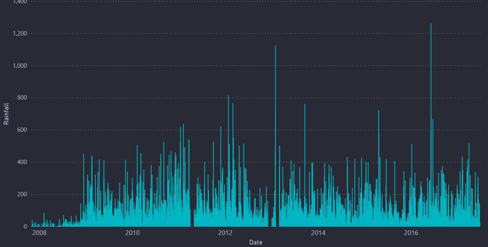
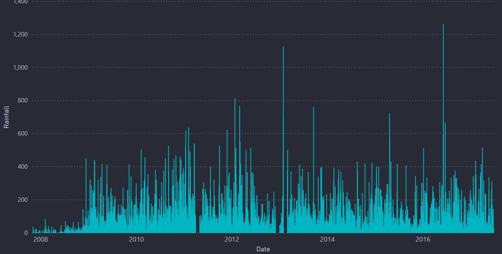

Smart Roads
Smooth Rides
Intelligent traffic management ensures safer and faster journeys. By optimizing routes and reducing congestion, we make commuting stress-free and efficient for everyone
More infoIntelligent traffic management ensures safer and faster journeys. By optimizing routes and reducing congestion, we make commuting stress-free and efficient for everyone
More infoSmart Path is an AI-powered Intelligent Traffic Management System that predicts congestion, optimizes traffic signals, and ensures smooth mobility. It dynamically controls traffic intensity and detects emergency vehicles 500m ahead, preemptively clearing routes to prevent stoppages. Using real-time GPS, traffic cameras, and sensor networks, it enhances urban traffic flow, reduces delays, and promotes sustainable commuting.
This dashboard is done using a software called PowerBI which is a product of Microsoft. Here I have just attached the images of the dashboard because PowerBI needs oraganizational account. So to see the visualizations interactive I am attaching my PowerBI dashboard file. This requires PowerBI software to open the file. The usage of dashboards like these is to bring a better understanding about the dataset and also to bring some beautiful insights


 


We are Team Hack4Industry, a group of passionate innovators dedicated to solving real-world challenges through technology and data-driven solutions. Our expertise spans Machine Learning, AI, Computer Vision, and IoT, with a strong focus on intelligent automation, smart infrastructure, and industry-driven problem-solving.